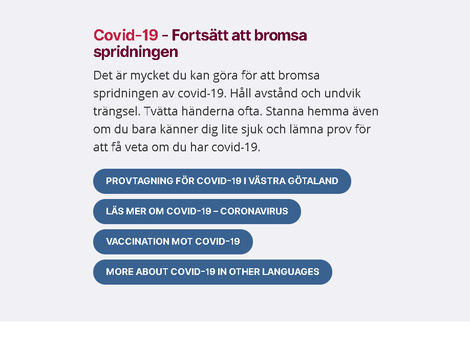
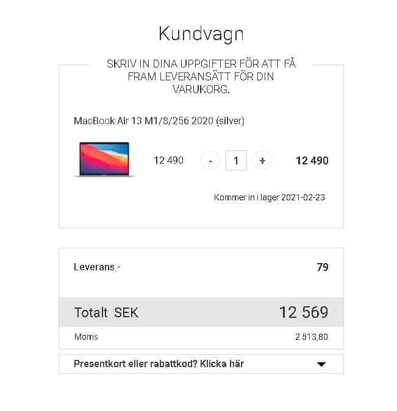
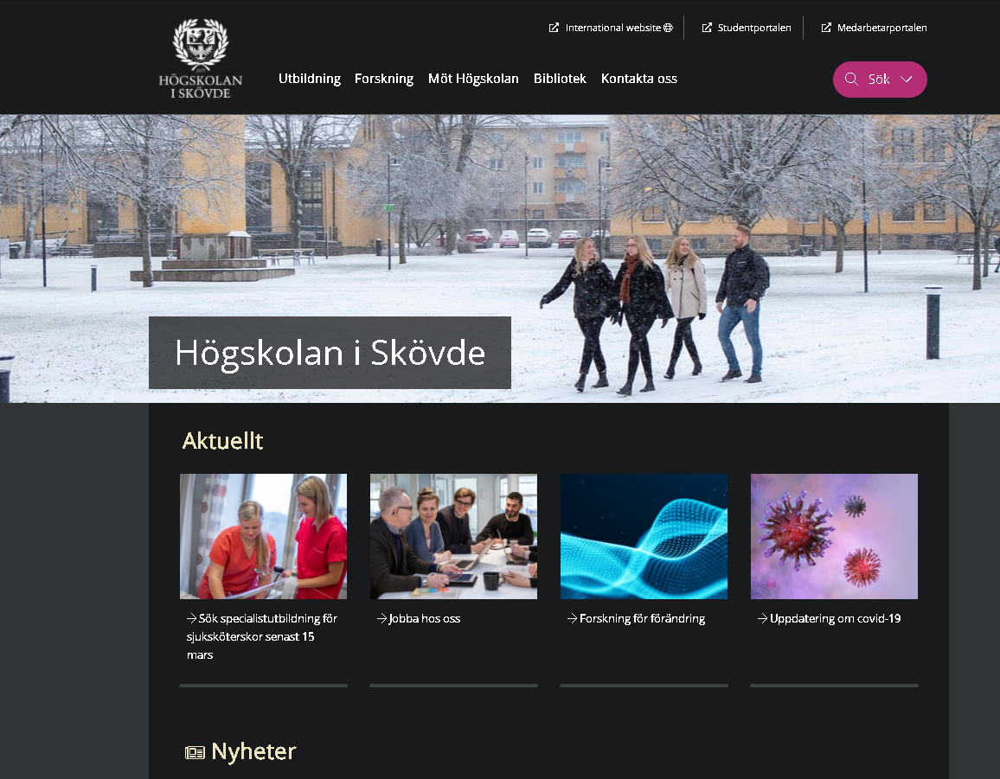
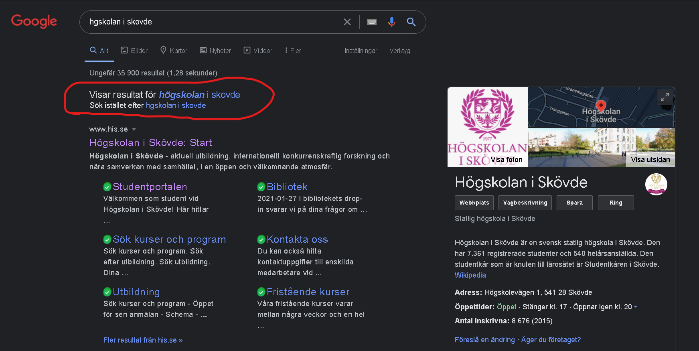
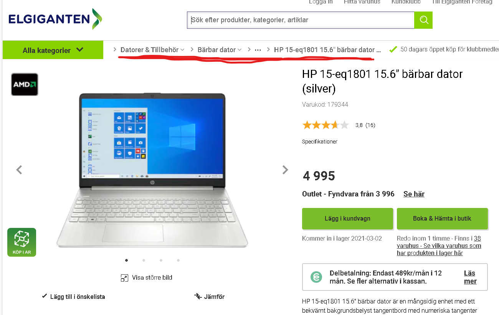
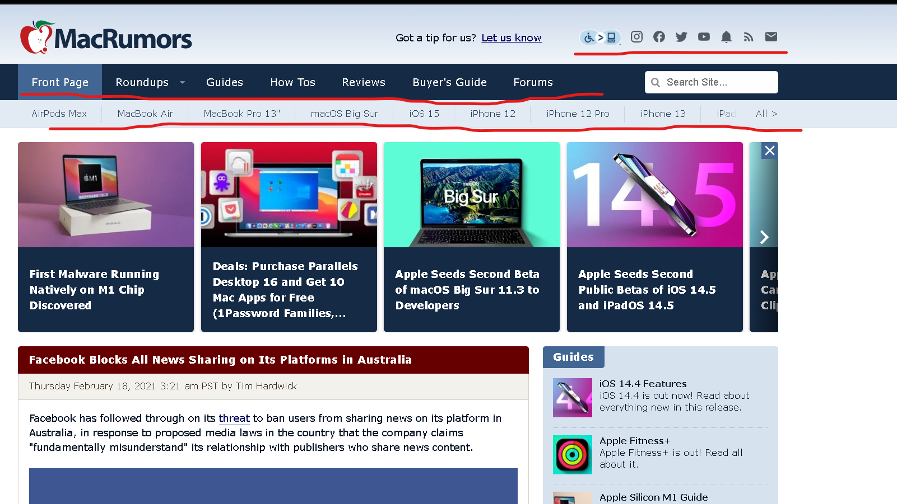
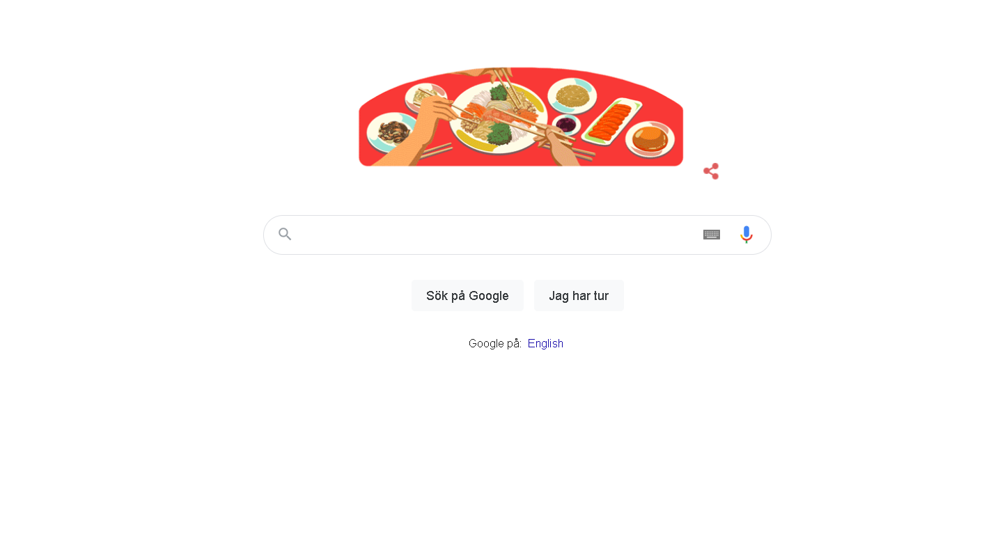
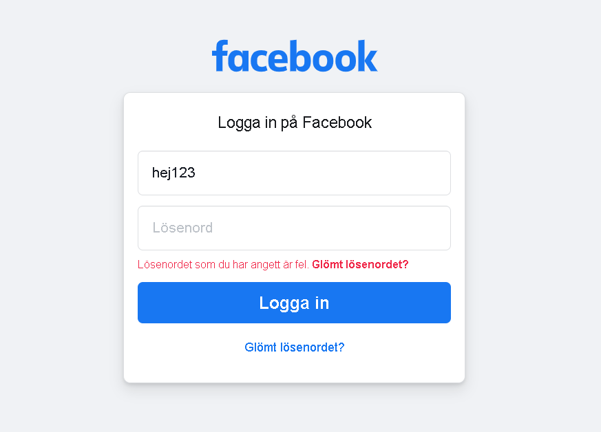

| Law |
Your explanation |
URL to example |
Example description |
Example image |
| Visibility of system status |
Betyder att man ska visuellt informera användaren vad som pågar eller hur statusen ser ut för den aktivitet som pågår. |
www.youtube.com |
När man till exempel kollar på en youtube film så ser man en buffer hur pass mycket utav klippet som har laddats ned och är redo för playback, eller om internettet strular så ser man att sidan försöker ladda och väntar på internet anslutning. |
 |
| Match between system and the real world |
Att system ska skrivas i användarens språk och med familjära ord, fraser och koncept istället för systemorienterade termer. Samt att presentera information i en naturlig och logisk ordning som demonstrerar empati och vetskap om användaren. |
www.1177.se |
1177 är ett exempel där det är viktigt att de håller sig till vardagligt och familjärt språkbruk för att användarna ska lätt kunna navigera och ta in den information som de skriver ut. |
 |
| User control and freedom |
Att låta användaren lätt kunna röra sig fritt i flödet på hemsidan, ibland sker misstag eller att man ändrar sig och då man vill kunna gå tillbaka ett steg eller till början av processen. |
www.elgiganten.se |
Det är lätt att gå in i "shoppingvagnen" och ändra sig och ta bort varor eller navigera tillbaka med hjälp utav underkategorierna på hemsidan. |
 |
| Consistency and standards |
Att följa den nuvarande standarden utav user interface och design heuristics, så att användarna vet vad de kan förvänta sig och hur de kan använda interfacet. |
www.his.se |
Högskolan i Skövde's hemsida är ett bra exempel som följer den standard som finns, vid första anblick känner man ingen interfacet och layoueten, det är inget nytt och skrämmande utan att man kan direkt börja navigera runt och hitta det man vill. |
 |
| Error prevention |
Bra errormeddelanden är viktiga, men de bästa designen förebygger fel från första böjan. |
www.google.se |
På google har de utvecklat ett verktyg som föreslår en sökning så som "Menade du: exempel" som då gör din felaktiga sökning till en korrekt sökning om du trycker på hjälp länken. |
 |
| Recognition rather than recall |
Genom att minimera användarens minnesbelastning genom att synliggöra element, åtgärder och alternativ. Användaren ska inte behöva komma ihåg information från en del av interfacet till en annan. |
www.elgiganten.se |
Elgiganten har gjort ett bra jobb att erhålla en liknande layout genom hela webbsidan, det är lätt att navigera i deras interface, det krävs ingen större hjärnaktivitet för att klicka runt dit man vill. Samt att hemsidan visar produkter i varukorgen vid ett knapptryck så du behöver inte komma ihåg det själv. |
 |
| Flexibility and efficient use |
Att göra det enklare att hitta genvägar för nybörjare samt att snabba upp användningen för både experter och nybörjare på hemsidan. |
www.macrumors.com |
Macrumors har ikoner och snabbknappar lite överallt på headern och navbaren, vilket gör det snabbt och enkelt att navigera runt och hitta deras sociala kanaler. |
 |
| Aesthetic and minimalist design |
Hemsidans interface bör inte innehålla information som är irrelevant eller sällan behövs. Varje extra informationsenhet i ett interface konkurrerar med relevanta informationsenheter och minskar deras relativa synlighet. |
www.google.se |
Google är känd för sin minimalistiska design, bara det som är absolut nödvändigt syns, "If it's not broken, don't fix it". |
 |
| Help users recognise, diagnose and recover from errors and help and documentation |
Felmeddelanden bör uttryckas på vanligt språk (inga felkoder), ange exakt problemet och konstruktivt föreslå en lösning. Samt att det är bäst om systemet inte behöver någon ytterligare förklaring. Det kan dock vara nödvändigt att tillhandahålla dokumentation som hjälper användarna att förstå hur de ska slutföra sina uppgifter. |
www.facebook.se |
Facebook har det typiska felmeddelandet vid fel lösenord, och vägleder användaren om hen har glömt sitt lösenord med rätt hjälpmedel och dokumentation. |
 |